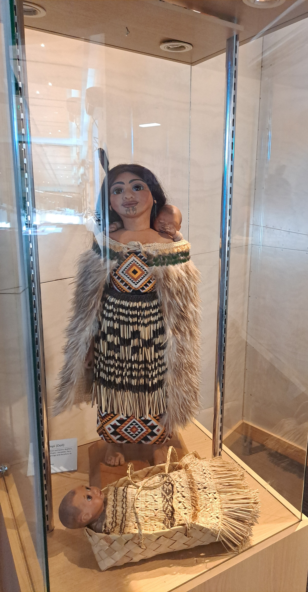

The classes available at Te Puia
Harakeke (Flax) is unique to New Zealand and is one of our most ancient plant species. When our ancestors arrived to New Zealand they quickly discovered that flax could be woven to make clothing, housing materials and decorative tūrapa (panels) for their houses. Two native species of flax both come from the lily family. Harakeke (common flax) grows up to three meters high and has firm, long leaves with a fine muka fibre, ideal for all types of weaving. Wharariki (mountain flax) is found along coast lines, growing up to 1.6 meters with softer leaves and less fibre than harakeke. At the National Weaving school, students are taught the skills and traditions of a craft hundreds of years old. “I believe weaving can only be learnt the old way - by sitting, by listening, by touching and by doing,” says head of the weaving school, Edna Pahewa. As well as learning how to weave harakeke (flax) and other materials, students learn the stories and designs unique to each iwi (tribe), as well as the Māori protocols associated with weaving. These include planting according to the phases of the moon and reciting prayers of thanks for flax and trees used. Te Rito is named after the baby shoot that sits deep at the heart of the flax. That baby is protected by two outside shoots, the mother and father. Students learn never to touch the inner three shoots when cutting the flax as they are the nucleus - the family unit too precious to be broken. Without these shoots, the flax will lose its identity. Māori used various art forms to record their histories and stories, preserving them for future generations. Weaving patterns and styles were designed to symbolise particular stories and these were handed down within a family or tribe.
In 1967, the first intake to the National Carving School began the task of learning the disciplines of their Māori ancestors. Among those students was Clive Fugill, the man who would become master carver of the institute today. “I’ll never forget that first day,” says Clive, “Our master carver, Hone Taiapa, looked at us all and said, “you are here to learn the art to pass it on to generations. Keep it alive for we could lose our identity.” It was exciting to be playing such an important role to save Māori art,” says Clive, “everyone has a reason in life. This was my reason. And that’s why I’m still here over 40 years later. If we lose our arts and crafts we lose our identity.” Today fulltime carving students study for three years at the national carving school, under the guidance of those, such as Clive Fugill and James Rickard, master carvers at Te Puia who were once institute carving students themselves. The protruding tongue, as used in the haka (war dance), is intended as a symbol of defiance, determination and strength, however in many carvings it can also symbolize the oral nature in which information was passed on from generation to generation. Here at Te Puia we offer you the chance to take away traditional Māori carvings; beautiful handcrafted pieces made at our National Carving School. Look for the Te Puia Official Mark of Authenticity. We also accept carving commissions.


Before Europeans and European weapons arrived in Aotearoa, Māori warfare mainly involved hand-to-hand combat. Warriors used many different hand weapons, including taiaha (fighting staffs), pouwhenua (pointed staffs), tewhatewha (axe-like staffs), tao (short spears), huata (long spears) and patu (clubs). The long weapons were carried, and the small clubs were often tucked into a belt. Special weapons were sometimes given names and passed down through generations. Wars could be fought over land and resources, but also as utu (revenge) or to increase mana (prestige). There were many traditions and rules to be followed during battles in earlier times. War parties (taua) could range in size from a small group to a few hundred people. Most battles took place in the summer months after the harvesting of crops was completed. The element of surprise was important, so raids often happened at dawn.Though there were deaths and injuries as a result of skirmishes in pre-European times, the numbers were very small in comparison to the slaughter that occurred when muskets became available.